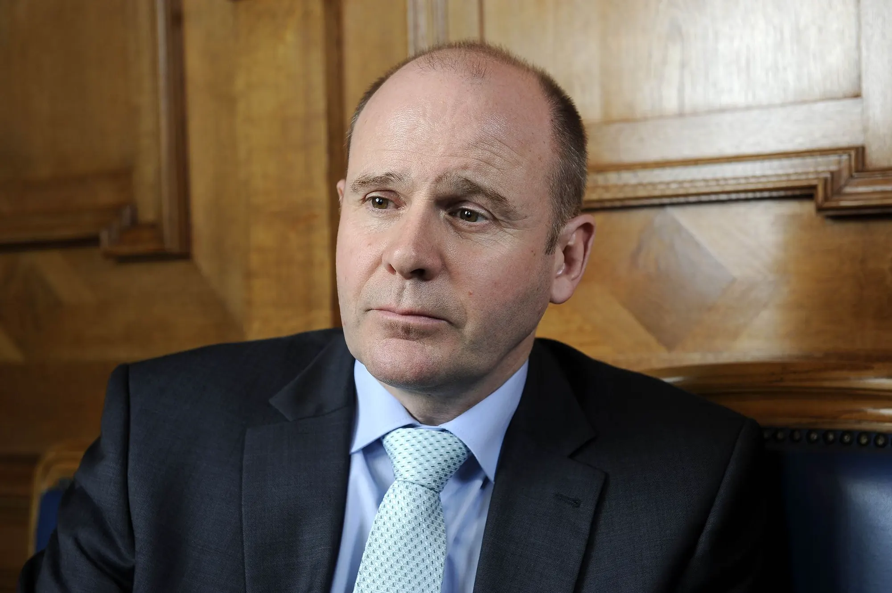

Über eine Million Schutzmasken flog die Swiss am Wochenende aus Hongkong in die Schweiz. Im Cockpit sass SVP-Nationalrat und Pilot Thomas Hurter.
Kostbare Fracht: Entladung des medizinischen Schutzmaterials aus China am Samstagmorgen in Zürich.Es dämmerte schon, als der Airbus A340 am Samstagmorgen um 6.05 Uhr in Zürich auf der Landebahn aufsetzte. Über zwölfeinhalb Stunden zuvor war sie in Hongkong gestartet. Mit leerem Passagierraum, aber kostbarer Fracht. Im Bauch des Jets befanden sich rund 20 Tonnen medizinische Masken, Anzüge und Brillen. Schutzmaterial, das von Spitälern, Pflegeheimen und Apotheken in der Schweiz wegen der Corona-Pandemie dringend benötigt wird.
 Zwei Flüge mit grossem Ertrag: 1,2 Millionen medizinische Schutzmasken, 50.000 Schutzanzüge und 10.000 Schutzbrillen transportierte die Swiss in die Schweiz.
Zwei Flüge mit grossem Ertrag: 1,2 Millionen medizinische Schutzmasken, 50.000 Schutzanzüge und 10.000 Schutzbrillen transportierte die Swiss in die Schweiz.
Captain an Bord der A340 war Swiss-Pilot und SVP-Nationalrat Thomas Hurter. Der Flug sei sehr ruhig verlaufen, erzählt er. Eingeprägt habe sich ihm vor allem der Start in Hongkong: «Wir sassen kurz nach Mitternacht Ortszeit in diesem leeren Flugzeug. Der Frachtraum, vollgepackt mit Schutzmaterial und Masken. Corona und eine Weltwirtschaftskrise im Kopf. Als wir starteten, brach auch noch ein Gewitter los – das war schon speziell.»
 SVP-Nationalrat und Pilot bei der Swiss: Der Schaffhauser Thomas Hurter.Der Versorgungsflug erreicht die Schweiz zu einem kritischen Zeitpunkt: Anfang Monat waren medizinische Schutzmasken noch so knapp, dass manche Behörden dem Gesundheitspersonal empfahlen, die Masken mehrfach zu verwenden oder stattdessen schlechtere Hygienemasken zu benutzen.
Nun entspannt sich die Lage langsam. Zum einen haben die Nachbarländer Deutschland und Frankreich blockierte Lieferungen von medizinischem Material in den letzten Tagen freigegeben. Zum anderen wird die direkte Versorgung der Schweiz aus der Luft intensiviert. Die Swiss arbeitet faktisch an einer Luftbrücke.
Bereits am Sonntagmorgen ist eine weitere Swiss-Maschine aus Hongkong in Zürich gelandet. Zusammen haben die beiden Fracht-Charterflüge 1,2 Millionen medizinische Schutzmasken, 50.000 Schutzanzüge und 10.000 Schutzbrillen in die Schweiz transportiert, wie die Swiss auf Anfrage bekannt gibt. Die Ware wird nun vom privaten Einkäufer an Spitäler und andere Gesundheitseinrichtungen in der Schweiz verteilt.
Das Beispiel illustriert, wie die Corona-Pandemie die Handelswege verändert. Weil der internationale Transport auf dem Landweg schwieriger geworden ist, setzen immer mehr Unternehmen auf die Luftfahrt. Die Frachtdivision der Swiss erhalte derzeit viele Anfragen für reine Charterflüge von privaten und öffentlichen Auftraggebern, sagt Swiss-Sprecherin Karin Müller. Es seien viele weitere Flüge geplant, unter anderem, um den Transport medizinischer Produkte und pharmazeutischer Güter zwischen der Schweiz, China, den USA und anderen Ländern sicherzustellen.